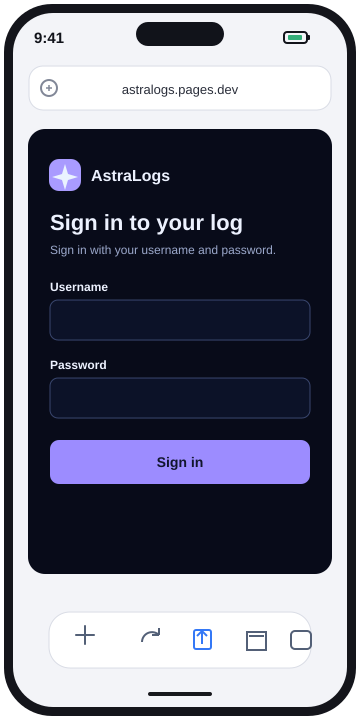
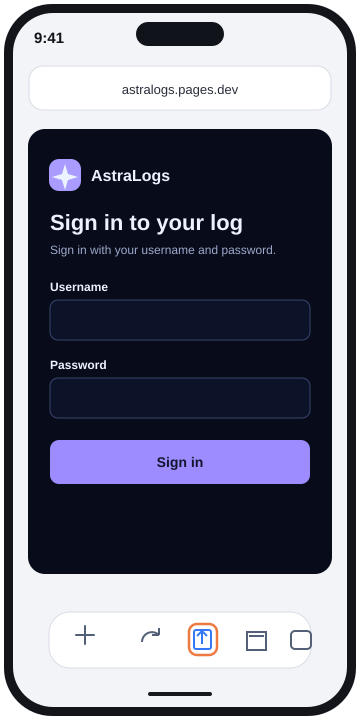
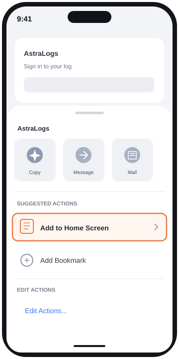
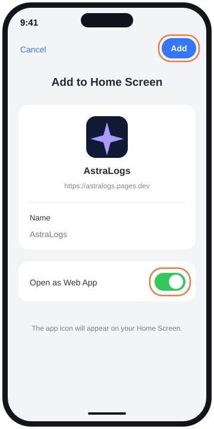
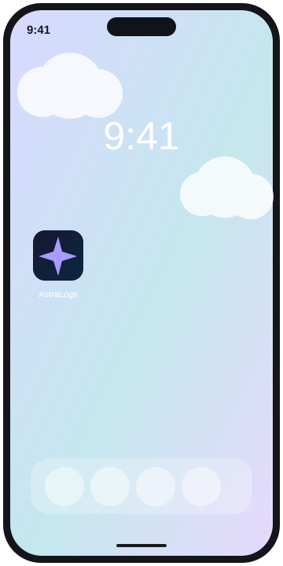

INSTALL GUIDE
Install AstraLogs on iPhone or iPad
Add AstraLogs to your Home Screen and open it like an app. No App Store download is needed.
Use Safari. Open the AstraLogs link in Safari, not inside another app's built-in browser.
-
STEP 1
Open AstraLogs in Safari
In Safari, go to astralogs.pages.dev. You can install it from the sign-in screen; you do not need to sign in first.

Illustration. Safari controls can look different across iOS versions. -
STEP 2
Tap Share
Tap the Share button (a square with an arrow pointing up). If Safari's toolbar is at the top, the Share button will be there instead.

Illustration. The Share button may appear at the top or bottom of Safari. -
STEP 3
Choose Add to Home Screen
In the Share sheet, tap Add to Home Screen. Do not choose Add Bookmark.

Illustration. Scroll the Share sheet if you do not see the option right away. -
STEP 4
Confirm the Home Screen app
Leave the name as AstraLogs (or change it). Keep Open as Web App enabled when shown, then tap Add in the top-right corner.

Illustration. Keep Open as Web App enabled when that option is shown. -
STEP 5
Open AstraLogs from the icon
Find the AstraLogs icon on your Home Screen and tap it. It opens in its own app window.

AstraLogs opens in its own app window from this icon.
Can't find Add to Home Screen?
Make sure the page is open in Safari. In the Share sheet, scroll down; on some iOS versions you may need to tap Edit Actions to add the option.
Open AstraLogsThese screen illustrations are examples; iOS menus and button positions may vary by device and version.